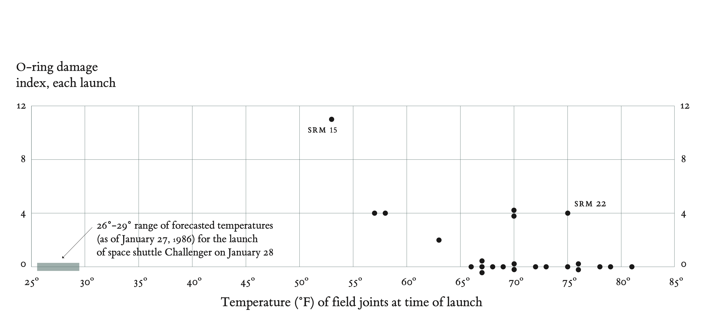

Principles and Practice of Data Visualisation
Module Outline
- Introduction to visualisation
- The importance of visualisation
- Visualisation and EDA
- Elements of visualisation
- Guidelines
- Putting it all together
Introduction
Visualisation, understanding, and communication
- Visualisation of data starts with one of two questions:
- What do I want to know about my data?
- What do I want to communicate about my data?
- Visualisation is an integral part of the DS workflow
- Exploratory data analysis
- Modelling and analysis
- Communicating results
Visualisation and data types
- What types of variables/data do you have?
- Numeric or categorical?
- Discrete or continuous?
- Time series, spatial, both?
- Other types?
Visualisation is not new!

The importance of visualisation
The Challenger disaster
Challenger: The background
- Engineers at Morton Thiokol, who supplied solid rocket motors to NASA, recommended that the launch be delayed because cold weather would jeopardize the stability of O-rings
- Their recommendations were overruled due to lack of persuasive evidence, and 73 seconds after launch, Challenger exploded
- According to Tufte (1997), the evidence was in the form of hand-written tables, but none was graphical, and they failed to convince NASA to delay the launch
Challenger: Tables, not plots
Challenger: Critiques by Tufte (1997)
- The tables (charts) that were discussed at meetings made it difficult to see bivariate (temperature/failure) relationships
- Anecdotal evidence
- With small sample size, anecdotal evidence can be particularly challenging to refute
- Engineers argued that SRM-15 had the most damage on the coldest previous launch date, NASA officials countered that SRM-22 had almost as much damage on one of the warmer launch dates
- Plotting the data tells a different story!
Challenger: Plotting O-ring damage
Challenger (1986)
Visualisation and EDA
Exploratory data analysis (EDA)
- “Exploratory data analysis is an attitude, a state of flexibility, a willingness to look for those things that we believe are not there, as well as those we believe are there.”
- “The greatest value of a picture is when it forces us to notice what we never expected to see.”
John Tukey (1915-2015)
EDA
- Consists of a large set of ill-defined visual tools to explore data as a prelude to postulating models or methods of analysis
- Could argue that data-wrangling overlaps with EDA
- Basic tools are plots, graphs, and summary statistics
- No step-by-step method, but does involve systematically going through the data to understand it
- Distributions of variables
- Relationships in time
- Relationships among variables
- Missing values/incorrect or nonsensical data
- Exploratory analysis is by its nature iterative
EDA
- As much of a mindset as a set of tools
- Try to understand the data – gain intuition, understand the process that generated it
- ‘Sanity-checking’
- Making sure that the data is on the scale you expect
- Look for patterns
- May be meaningful, but could also indicate something wrong in the data!
- Above all, EDA is between you and the data – for you to understand what’s going on
Elements of visualisation
A taxonomy of elements
Scale
Conditioning
Perception—colour and length
Transformations
Context
Smoothing and other large data considerations
Scale
In any plots, choose axis limits to fill the plotting region
If necessary, make multiple plots of different regions to focus on important features that may not be visible in a single plot
Is the plot constructed in a way that matches viewers’ expectations?
- Do the axes increase in an expected way?
Don’t confuse the viewer!
- Scales changes mid-axis
- Two different scales on the same axis
What’s misleading about this?
Conditioning
- In any large and complex dataset, there will likely be different relationships among variables in different subgroups of the data
- Construct side-by-side scatterplots, histograms, boxplots, etc. but keep scales the same to make comparisons easier
- If representing on the same plot, use different colours and symbols to represent different groups
- Use scatterplot smoothers to guide the viewer’s eye
- In the measles example, some grouping according to region was carried out
Example of conditioning
Perception: colour
- Colour lets you see an extra dimension
- Colour plots are much more common, but being able to choose a palette of colours is not a straightforward task
- Saturated (bright) colours tend to be difficult to look at for long periods of time
- Keep in mind that some people are colour-blind
- Use existing colour palettes rather than creating your own
- Decide whether to use a sequential colour scheme or one where low and high values should be highlighted?
Colour palettes in seaborn

Palette for high and low values
Lehmann, E. A., Phatak, A. Stephenson, A. and Lau, R. (2016). Environmetrics, 27, 239–251.
Perception: Length
- We are pretty good at judging length visually, by comparison to area, volumes, or angles
- Practical consequence
- Bar charts are to be preferred to pie charts
- Practical considerations
- Visually, the longer a bar, the greater the absolute value it represents
- Can be vertical or horizontal
- To judge magnitude, bars must represent the entire length, not just a portion
Length: Spot the difference
Length or area?
Transformations
- Sometimes, curvilinear bivariate relationships can be straightened out by transforming one or more variables
- Easier to interpret than nonlinear relationship
- Prior to regression
- Transformations can be useful when
- The data covers several orders of magnitude
- Data is ‘squashed in’
Tukey-Mosteller’s bulging rule
- Tukey and Mosteller, a couple of statisticians, came up with some guidelines for how to choose transformations to help ‘straighten-out’ a plot of two variables
- For example, if you have data in the first quadrant, try transformations along the positive \(Y\)-axis or \(X\)-axis or both
Example: Bulging rule
Example: Logarithmic transformation
- ‘Moore’s Law’ is the observation that the number of transistors in an integrated circuit doubles about every two years
- Not so much a law as an empirical observation
- Let’s visualise it in two ways
Context
- Context is information that leads to a better understanding of the who, what, where, and why of your graphic, e.g.,
- Axes labels
- Units of measurements
- Label points of unusual interest,
- Depending on broader context in which the graphic is appearing, a caption describing the data and important features may be necessary
Large datasets
- Split the data into natural subgroups (conditioning) before plotting
- Use transparent colours
- Consider adding a scatterplot smoother to help guide the viewer’s eye
Cherry Blossom Run (Washington, DC)
Guidelines
Nolan (2017)
- Chose scales appropriately
- Avoid having other graph elements interfere with the data
- Use visually prominent symbols
- Eliminate superfluous material—‘chart junk’ as in the Challenger graphics
- Where possible, avoid plotting points on top of one another—use jittering
Guildelines (continued)
- Put juxtaposed plots on the same scale
- Make it easy to distinguish elements of superposed plots, e.g., colour, line type
- Avoid stacking
- Avoid areas, volumes
- Don’t break visual metaphor, i.e., if using rectangles, then area should correspond to the value of the variable you’re trying to represent, not the length of one of the sides
Guidelines (continued)
- Describe what you want the reader to see in the caption
- Use informative labels and legends
- Use colour and plotting symbols to add more context
- Plot the same thing in many ways/scales, but not on the same plot!
Putting it all together
Visualising Belt Wear
Improving the visualisation
Getting fancy: animation
Further viewing
Source: FlowingData
Further reading: some caveats
Source: FlowingData

Data Science Transforming Maintenance